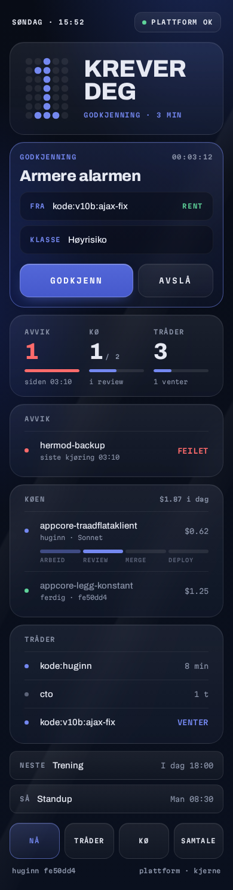
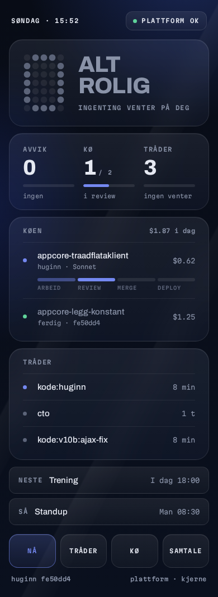

Referansen din
Periwinkle, tung versal-grotesk, glassbrikker, tab-bar.
B3 — dag med avvik
Punktmatrise-«1», periwinkle bare på det som krever deg eller pågår.
B3 — rolig dag
Grå «0». Blått er borte.
Til venstre referansen du la ved, så B3 (dag med avvik og rolig dag), og til slutt B1 slik den var, for sammenligning. Trykk på et bilde for den levende siden. Runde 3

